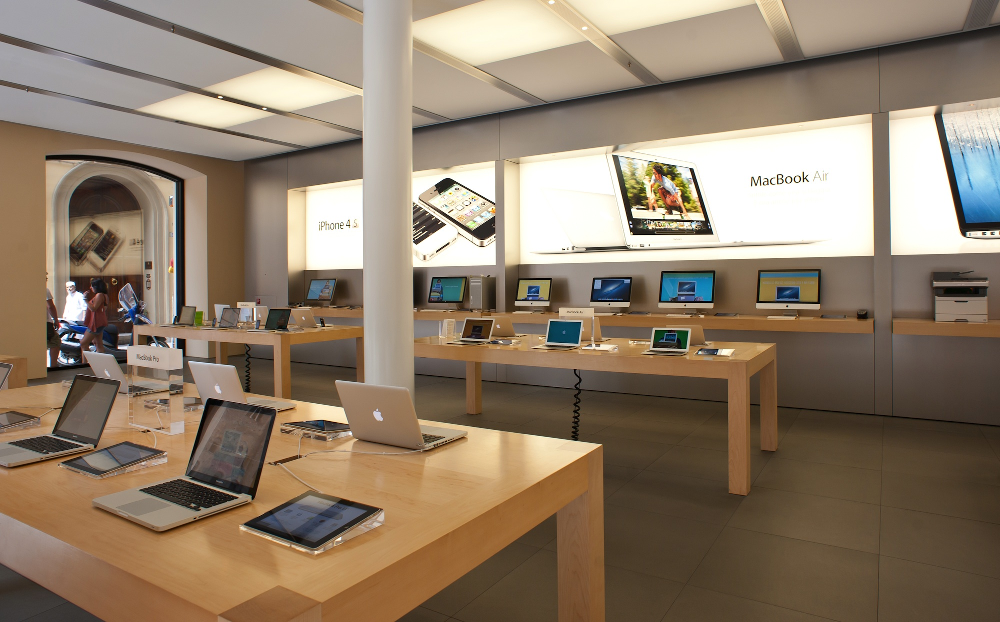
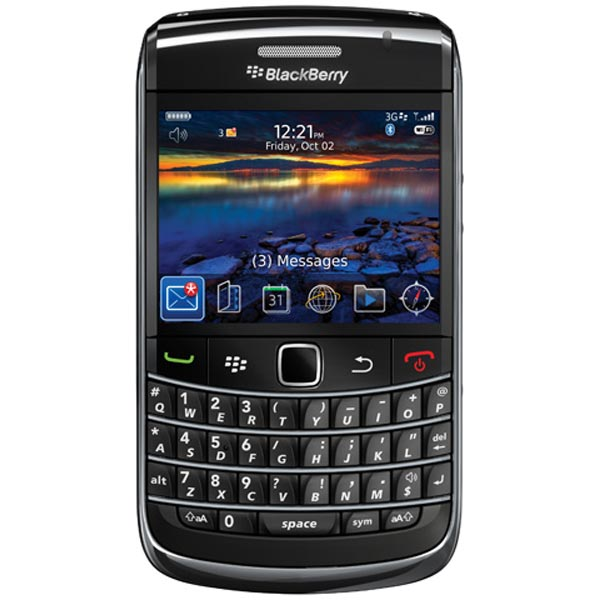
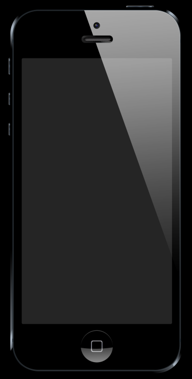

The Truth About White Space
What separates a high end store from the average store? How is an Apple Store different from Walmart?

Is it just the prices? Or is the entire environment different?
Whether you notice it or not, white space is a crucial factor in differentiating the two.
Simply put, white space is unoccupied space within a design. It can be white, a different color, or a photo background.
White space accomplishes a number of things
- It gives individual elements in a design more breathing room.
- It eliminates clutter & distraction, which helps your viewer to focus on what's important.
- It separates elements from each other
- It can be used for great creative effects
- It can draw attention to a single element
Walmart is cluttered because so many products are visible in a limited space. Apple does not show the same volume of products, which communicates: "This is the best we have to offer. Consider it closely."
I heard white space once described as a control knob for distractions. Just like you can turn down the music in a room so you can more easily carry on a conversation, you can 'turn down' distractions by adding more whitespace.
Instead of seeing tons of elements right next to each other, you're able to appreciate the beauty and meaning of a single element.
Think about cell phones before the iPhone. What were they like? They were cluttered. Half the phone was taken up with buttons. But when the iPhone arrived, there was a single button. The clutter was gone. And that simplicity allowed people to focus on the content they were pulling up on their phone. It felt intuitive because people weren't bombarded with tons of different options or buttons.
 
When presented with a lot of choices, your brain adapts and starts to filter out the meaningless from the meaningful. You will automatically overlook or ignore much of the unimportant stuff.
We live in a busy world. Being able to stop and absorb is important. The alternative is to have so much crammed in a limited space that for someone to notice something it has to catch their eye (like a bold color or font).
The goal with white space is to have people intuitively understand "Oh, this what I need to be looking at." You shouldn't have people asking "What am I looking at here?" White space destroys clutter.
Common Novice Mistakes
Cluttering up a design by stuffing as much information as possible. Progressive disclosure is great.
Structure & Whitespace
Deliberate use of white space can help you structure your design by grouping like elements.
What you don't want is to have objects randomly placed across your design. Now the question you'll be asking is: "Well, how much space should I have between elements? Should elements be aligned?" Purposeful size relationships are important, as is alignment.
Proportion is a way of scaling things.
Using Whitespace With Imagery
If you have an image as a background, you will want to ensure you have white space for any copy or other graphical elements. The best way to do this is to use photos that follow the rule of thirds. Center weighted images can work if there is blank space at the top or bottom.
Getting Creative With Whitespace
This is a case where what you don't say is as important as what you do say.
How To Practically Use Whitespace
White space is used all the time for all types of documents. Margins are a supreme example. Imagine printing a document without margins. It would look weird. The same thing happens in films/movies - subtitles, safe spots, if you get too close, you risk having things cut off.
Line spacing is yet another example.
Misuse of white space can make things look awkward. For example consider a menu bar on a website. There is a ton of white space at the top, but none at the bottom. This makes the menu look awkward. The best way to think of it is to pretend each element has a box around it. This is actually how it works in the web design world with CSS. Then you would add equal/proportinal amounts of padding to each object. The downside of CSS is it's much harder to get things precisely where you want, which is why we'll focus on applying these principles using PowerPoint.
For a final example, consider the siphoning of sections. Centering a piece of text and adding a lot of white space around it will make it seem more important. Even more so if you increase the font size and color.
You might think I'm saying tons of whitespace is important and you should always have a lot. While that is generally true, each design is different. It has its own context. If you're trying to communicate clutter or claustrophobia, then yes purposefully use little white space.
For example, Basecamp wanted to commuicate the constant bombardment and overload many teams face. So they created a noisy design. In that particular context, it was very effective.